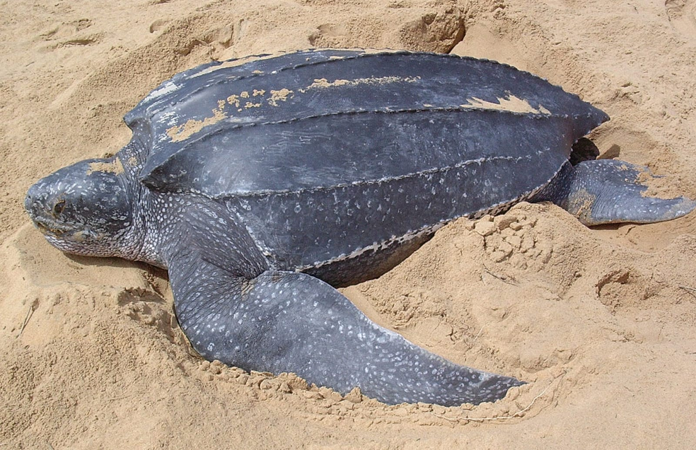

Distribution
These turtles are seen nesting in Sri Lanka including, Induruwa, Mawella, Ussangoda, Rekawa, Ambalangoda, Kosgoda, Bundala, Godavaya & Yala. Although leatherbacks are most often found in tropical waters, they are distributed around the globe in temperate oceans, and even on edges of sub arctic water & sub arctic oceans. They travel north & live in Northern Atlantic waters as far north as Newfoundland, Nova Scotia, and Labrador. They also inhabit South Atlantic Waters, as far south as Argentina and South Africa. This turtle inhabits waters as far east as Britain and Norway.

Breeding
The female gains reproductive maturity 5-12 years (average 13 years). It’s known that the males will return to the same nesting beach if they were successful in the previous season. The male turtles will migrate just offshore a common nesting beach generally before nesting season begins. They try to mate with as many females as possible. They mate in the water. These female turtles have a gestation period of 55-75 days & then they swim ashore at night to nest and will produce a clutch which most may not contain yolk.
They lay their eggs in the sand of tropical beaches. These turtles will lay about 5-7 nests per year, re-nesting every 9-10 days. Also, they will return to the same nesting location every 2-3 years. In Sri Lanka the nesting is taking place in May & June also in October & December. The nests are deeper than all other turtles & comprise 90-130 clutches of eggs. These eggs are spherical, soft shelled & 50-54mm. There usually white but may contain green spots. After the female lays her eggs, then it cover the nest with sand to discourage predation and moderate the temperature and humidity around the eggs. After the female has completed this process she will returns to the ocean & No subsequent parental care occurs.
Nest temperature determines the hatchlings' sex. At 29.5 degrees Celsius hatchlings are equally likely to be male or female, hatchlings incubated at 28.75°C or less will be male, & above 29.75°C they'll be female
Human impact & dangers
Nesting females pack the sand over their clutch of eggs, perhaps to obscure the scent of the eggs and make them harder for small predators to dig up. Hatching success of clutches is about 50% in an undisturbed nest. Many nests are destroyed by many different predators.
Hatchlings wait until nightfall to emerge and head for the water, to avoid predators. Throughout their lives leatherbacks are counter-shaded, dark on the dorsal surface and light underneath, to better blend with background light.
These turtle adults are strong and fast swimmers & they may defend themselves aggressively. The thick layer of connective tissue over bony plates covering much most of their body helps them to escape the predators to some extend. They avoid rocks which can damage the shell.